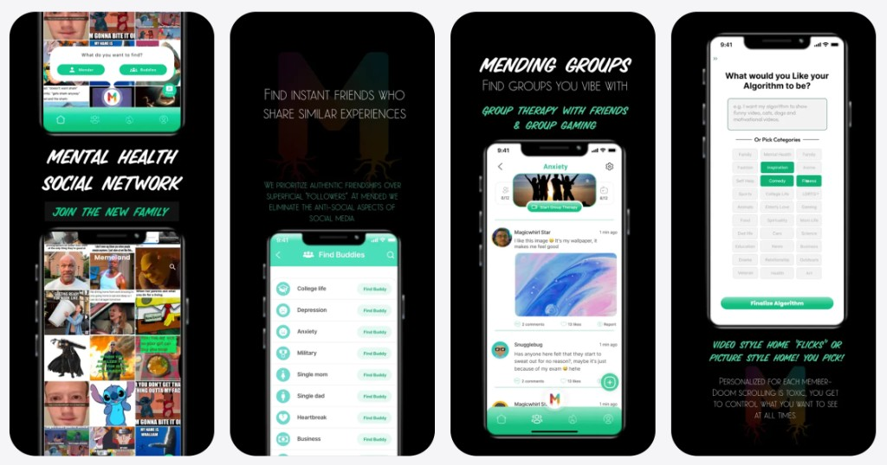
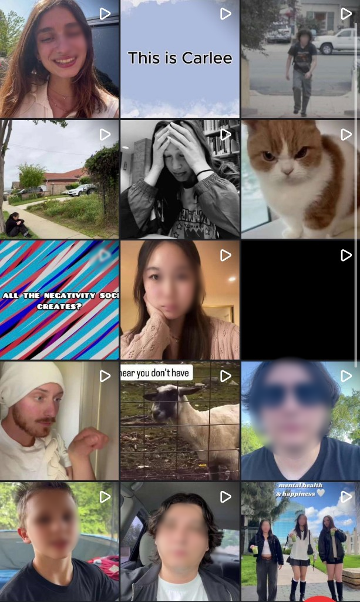
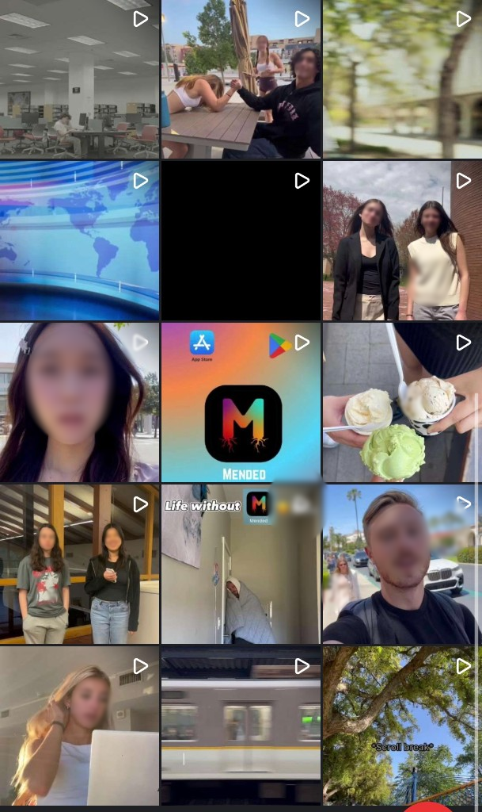

Case study
Mended
From weekly themes to team content.
April 2025–November 2025
- Role
- Marketing Intern / Intern Team Leader
- Period
- April–November 2025
- Work arrangement
- Remote
- Team
- Seven people, including me
Mended is a social networking app focused on mental wellbeing. During my internship, I helped organize weekly work, proposed content ideas and themes, and reviewed fellow interns’ content.
About Mended
Mended is a social networking app focused on mental wellbeing, combining social content with community connection and support.

My contributions
My internship work included:
- Proposing content ideas and weekly themes for mental health content.
- Reviewing intern-created posts, blogs, and videos and providing feedback and revision suggestions.
- Conducting market and trend research.
- Contributing to business development discussions and brainstorming potential app features.
On my own
I proposed weekly themes and content ideas, conducted research, and wrote briefs the team could follow. I reviewed interns’ work and gave feedback and revision suggestions.
With the team
Fellow interns created the posts, blogs, and videos from shared weekly plans. Business development discussions and app feature brainstorming happened collaboratively with the wider team.
My role
I worked remotely as a marketing intern and intern team leader for people who want to network around mental health. I proposed content ideas and weekly themes, suggested revisions, and gave feedback on content created by other interns. I also researched market trends and worked with a team of seven on business development and potential app features.
What I worked on
Content planning, review, and feedback
I proposed weekly content themes and content ideas on mental health topics. I reviewed interns’ posts, blogs, and videos and provided feedback and revision suggestions. I did not produce those assets myself.
Audience and trend research
I researched market trends and explored topics relevant to people who want to connect around mental health, using those findings to suggest content ideas for this audience.
Business development and app ideas
I contributed to business development discussions and collaborated with a team of seven to brainstorm upcoming app features.
Turning a theme into a clear weekly brief.
I developed weekly themes and organized them into assignments with defined deliverables, publishing channels, and space for team questions.
- Plan: Choose the weekly focus.
- Organize: Define tasks, content formats, quantities, and submission channels.
- Coordinate: Include follow-up reminders and opportunities to share ideas.
Weekly planning documents
MENDED: Weekly Marketing Team Brief
Prepared by: Victoria Choi, Marketing Intern / Intern Team Leader
WEEK 4: HUMOR-BASED CONTENT
Focus:
Create humor-based content to promote Mended and contribute to its content feed.
| Deliverable | Quantity | Channel |
|---|---|---|
| Humorous promotional video | 1 video | PhotoCircle |
| Humor-based memes | 4 posts during the week | Mended |
| Short humor videos | 3 videos | Mended / Flicks |
Follow-up:
Complete unfinished tasks from the previous three weeks. Additional memes and videos are welcome beyond the required deliverables.
MENDED: Weekly Marketing Team Brief
Prepared by: Victoria Choi, Marketing Intern / Intern Team Leader
WEEK 6: GUERRILLA MARKETING AND APP PROMOTION
Focus:
Develop low-cost promotional strategies using referral codes, word of mouth, and guerrilla marketing.
Planning target:
Develop a strategy aimed at generating 35 app downloads per week through a referral code.
Assignment:
Prepare a promotional strategy and share it with the group so members can exchange ideas.
Preparation:
Review guerrilla marketing and campus marketing videos provided by the CEO.
35 downloads was a planning target, not a reported result.
Reformatted from weekly briefs I created during my internship.
The work behind the brief.
These examples were created by fellow interns. My role was to propose ideas, review the content, and provide feedback and revision suggestions.
Mended’s blog, website, and Instagram account are currently being revamped, so the original content is not publicly accessible. The examples shown here are saved materials from my internship. Other interns’ faces have been blurred to protect their privacy.
Team-created reels
Sample grid of short-form videos from the internship. Faces are blurred for privacy.


Reels produced by fellow interns during weekly content cycles, not my own production work.
Intern-created video
[Add when ready]
[Add when ready]
[Add when ready]
Intern-created video
[Add when ready]
[Add when ready]
[Add when ready]
Intern-created video
[Add when ready]
[Add when ready]
[Add when ready]